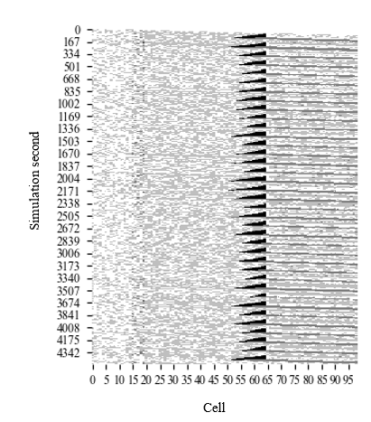

Home || Education || Research || Publications || Resources Research Paper CodesAccess to these codes are restricted. If you are interested shoot me an email with proper reason. Thanks!!!
Interesting Class Projects/ HomeworksHomeworkTraffic Simulation: Cell Transmission ModelCourse Teacher: Christopher M. Day This project implemented Cell Transmission Model (CTM) originally proposed by Daganzo (1994). As this was developed as part of class homework this is very simple. Though I enjoyed very much working on this. The source code is open- (CTM-code (Processing + Java)). Feel free to use if you wish (Cite please!!!).
Daganzo, C.F. “The Cell Transmission Model: A Dynamic Representation of Highway Traffic Consistent with the Hydrodynamic Theory.” Transportation Research Part B 28(4), 1994, 269-287 This work is simply merging vehicle from two different links and implemented a fixed time two-phase signal controller without any clearance time (at major arterial cell number 65). A blank cell means no vehicles and a black cell means cell is at capactiy. Number of vehicles in each cell at each time step is shown in the figure. This figure can futher be analyzed to show shockwave Last updated September 9, 2021 |